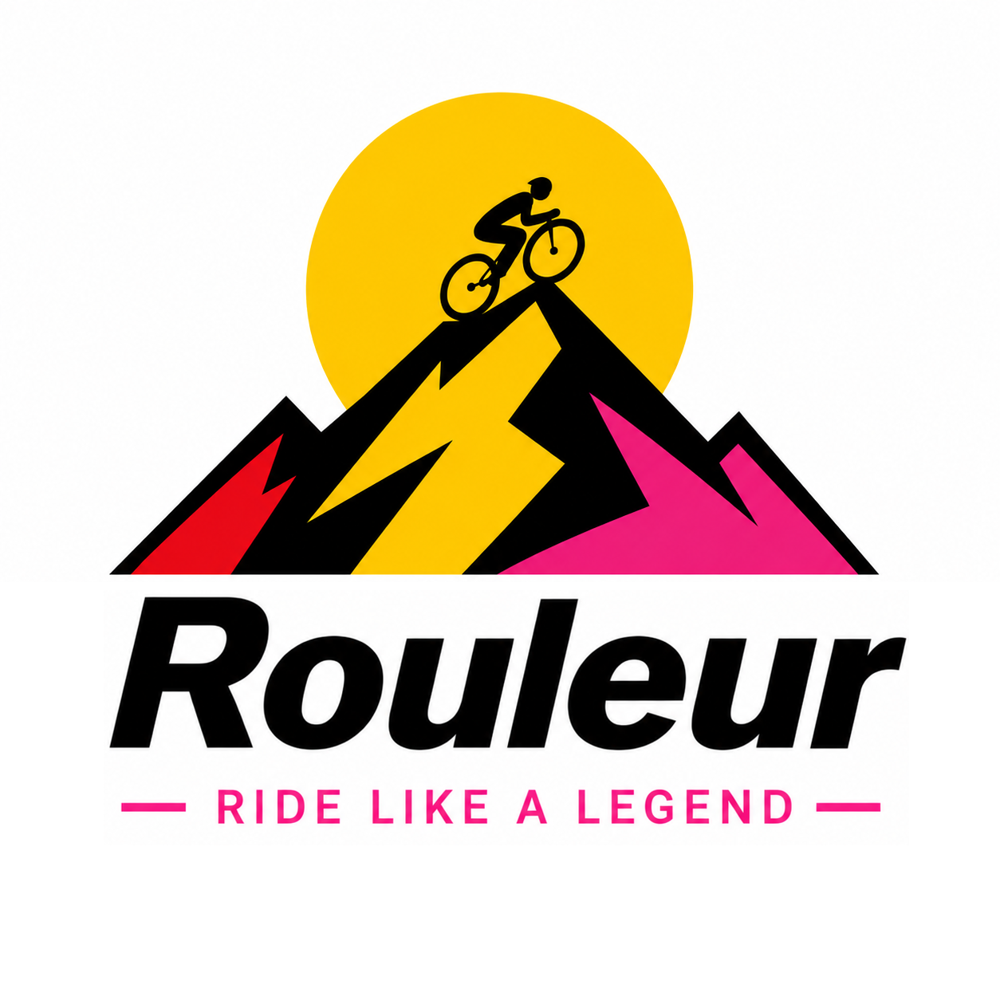

Des courses et des coureurs
Explorez les éditions du catalogue, leurs vidéos, leurs vainqueurs et les fiches des cyclistes. Gardez vos favoris et les courses à regarder plus tard.

RouleurRouleur · Ride like a legend
Revivez les grandes courses du cyclisme sur votre vélo indoor, enchaînez les vidéos en Flash ou partez sur votre propre parcours GPX avec Échappée. Une application, plusieurs façons de rouler.
Rouleur relie les images des grandes courses à votre effort, et les lieux de vos parcours à leurs histoires. Choisissez votre expérience depuis l’application.
Explorez les éditions du catalogue, leurs vidéos, leurs vainqueurs et les fiches des cyclistes. Gardez vos favoris et les courses à regarder plus tard.
Connectez un vélo compatible Bluetooth, ou découvrez la démonstration. Le pilotage de difficulté s’active explicitement et dépend du matériel et du contenu disponibles.
Importez un GPX pour préparer une sortie Échappée, avec une balade commentée ou une course virtuelle adaptée au relief.
Les courses historiques et les sorties libres se retrouvent dans Rouleur.
Choisissez une édition et une durée proposée. Selon les contenus disponibles, le parcours et les commentaires préparent l’effort avant de retrouver les images de la course.
Lancez un enchaînement de vidéos de courses, sans préparation narrative. Passez à la suivante ou laissez la file avancer à la fin de chaque vidéo.
Choisissez votre GPX et préparez une balade avec des commentaires sur les lieux et le relief, ou une course arcade contre vingt adversaires virtuels. En indoor ou en outdoor.
Une course de légende ou votre prochaine échappée : choisissez votre départ.